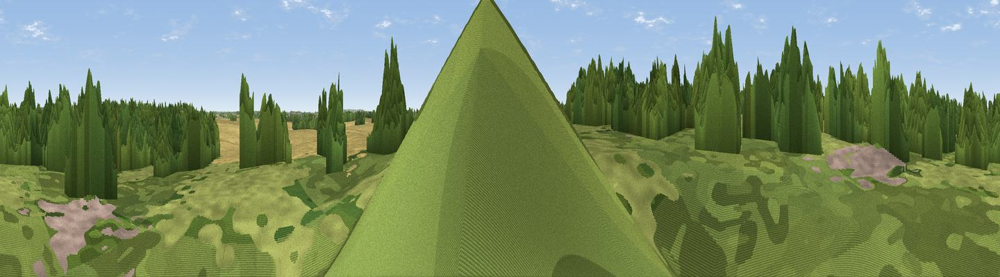

Pleshey Mount
#45678 in England · top 79% of its area beats it · near PlesheyThe view, rendered

A 360° render of this exact spot computed from the terrain model, tree cover and land cover — summer colours, afternoon light, calibrated against photographs of famous viewpoints. Real trees, hedges and buildings will differ in detail.
The panorama
Grey silhouette: terrain skyline in each direction (720 bearings, Earth curvature and refraction included). Dashed green: skyline with trees (+15 m) and buildings (+8 m) as obstacles. Blue strip: how far the ground is visible on each bearing.
Where the view opens
Wedge length = distance to the farthest visible ground on that bearing (vegetation-aware). Rings at 10, 25 and 50 km.
What fills the view
58% woodland · 32% cropland · 10% grassland
Angular shares of the visible panorama (visual magnitude), not map area. Landscape diversity 0.40 (0–1 Shannon).
Key numbers
More beautiful places nearby
The staircase of upgrades: each row has a higher view potential than everything closer. Driving times are estimates from straight-line distance, calibrated against real road routing — check an actual route before setting out.
| Place | Direction | Drive | Score |
|---|---|---|---|
| Viewpoint near Takeley Street | NW · 15 km | ~26 min | 22.4 |
| Viewpoint near Danbury | SE · 15 km | ~26 min | 46.0 |
| Viewpoint near Downham | SSE · 20 km | ~34 min | 47.6 |
| Viewpoint near Cold Norton | SE · 23 km | ~38 min | 47.9 |
| Viewpoint near Cold Norton | SE · 24 km | ~39 min | 49.4 |
| Viewpoint near Great Warley | SSW · 27 km | ~43 min | 50.1 |
| Viewpoint near Vange | S · 28 km | ~44 min | 58.2 |
| Viewpoint near Horndon On The Hill | S · 29 km | ~45 min | 58.8 |
51.80469, 0.41387 · source: osm viewpoint · position refined by local search. Computed location — check access rights before visiting.